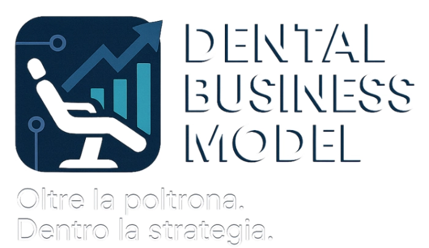
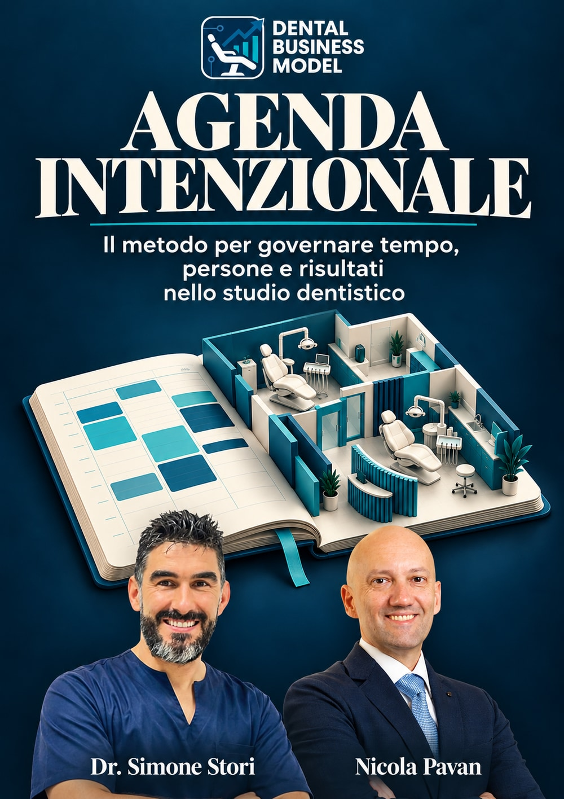

Progetta il mese
Parti dagli obiettivi per capire quante visite, proposte e accettazioni servono e quale capacità puoi mettere a disposizione.

Il nuovo libro di Dental Business Model
Agenda Intenzionale è il libro per collegare obiettivi, persone e tempo. Parti dalle scelte dello studio, progetta gli spazi e dai continuità ai percorsi di cura.
Dr. Simone Stori e Nicola Pavan
Voglio accedere al prelancioCartaceo 49 € · Digitale 39 € in prelancio.
Richiedi l’avviso su WhatsApp. Nessun pagamento e nessun impegno di acquisto.

Il metodo prende forma, pagina dopo pagina.
Ti suona familiare?
Stai guidando l’agenda o stai cercando di sopravviverle?
È mattina. Il telefono squilla, il laboratorio aspetta una conferma e c’è un controllo veloce da inserire. Un collaboratore cerca spazio per una seduta lunga. Una prima visita può aspettare solo pochi giorni.
Intanto un paziente ha accettato il piano, ma il percorso deve ancora partire. La segreteria viene a chiederti come fare.
Alla fine della giornata avete lavorato tutti. Ma quanto sono avanzate le cure? Quanto spazio è rimasto per le vere priorità?
Occupazione, produzione, marginalità e continuità raccontano cose diverse. Imparare a leggerle insieme cambia il modo in cui progetti la settimana.
Un cambio di prospettiva
È il luogo in cui le scelte dello studio diventano lavoro quotidiano: quali cure trovano spazio, quali risorse proteggi, come collabora il team e quanto avanzano i percorsi. Puoi imparare a progettarla, osservarla e correggerla.
Cosa imparerai a fare
Un percorso pensato per titolari e responsabili organizzativi che vogliono prendere decisioni più consapevoli, insieme al team.
Parti dagli obiettivi per capire quante visite, proposte e accettazioni servono e quale capacità puoi mettere a disposizione.
Disegna gli slot e organizza i percorsi perché i piani accettati trovino spazio e avanzino con continuità.
Collega professionisti, ASO, sale e laboratorio, riducendo frammentazione e passaggi inutili.
Dai una regola ad annullamenti e percorsi interrotti, così ogni situazione ha un passo successivo.
Leggi il PROPOSTO e gli scostamenti per capire come si sta costruendo il lavoro futuro.
Valuta dati, automazioni e AI a partire dal problema organizzativo che vuoi risolvere.
Il segnale da osservare prima
Nel nostro metodo il PROPOSTO è il principale indicatore anticipatore dello sviluppo dell’agenda. Aiuta a collegare ciò che emerge dalla diagnosi al lavoro che potrà essere pianificato.
Appropriatezza clinica e libertà del paziente guidano sempre le proposte. Gli obiettivi organizzativi vanno costruiti sui dati e sulla capacità reale del proprio studio.
Dentro Agenda Intenzionale
Apri i capitoli per esplorare il percorso. Tavole visive e dieci punti di sintesi a fine capitolo aiutano a collegare i concetti al lavoro quotidiano.
Da raccolta degli appuntamenti a sistema di governo dello studio.
Dagli obiettivi alle visite, alle proposte e alla capacità necessaria.
Riconoscere i colli di bottiglia tra persone, sale e organizzazione.
Prestazioni ancora, slot protetti e fasce di energia.
Accorpare le prestazioni e dare continuità ai percorsi di cura.
Governare controlli, urgenze e appuntamenti brevi preservandone il valore clinico.
Le Aree Strategiche e le diverse fasi della vita del paziente.
Listino Dinamico, capacità disponibile e regole trasparenti.
Coordinare collaboratori, segreteria, ASO, laboratorio e responsabilità.
Chiudere ieri, governare oggi e anticipare domani.
Conferme, disdette, mancata presentazione e recuperi: il protocollo “Mai nel Limbo”.
Registratori AI, automazioni e agenti conversazionali nelle applicazioni concrete.
Misurare, leggere gli scostamenti e correggere con il supporto dell’AI.
Un percorso graduale per trasformare il metodo in abitudini di lavoro.
Scegli come vorresti leggerlo
Scrivi a Nicola su WhatsApp: ti avviseremo quando aprirà il prelancio e potrai ricevere le informazioni per acquistare il libro.
Il clic apre un messaggio già compilato: sarai tu a inviarlo. La scelta è indicativa, gratuita e senza impegno. Nessun ordine viene effettuato da questa pagina.
Formato cartaceo
Prezzo di prelancio
49 €
Prezzo pieno successivo: 99 €
Avvisami: scelgo il cartaceoMessaggio diretto a Nicola: interesse per il cartaceo e richiesta di avviso all’apertura del prelancio.
Formato digitale
Prezzo di prelancio
39 €
Prezzo pieno successivo: 59 €
Avvisami: scelgo il digitaleMessaggio diretto a Nicola: interesse per il digitale e richiesta di avviso all’apertura del prelancio.
01 / SCEGLIIndica il formato che preferisci. Potrai decidere cosa acquistare quando saranno aperte le vendite.
02 / INVIAInvia il messaggio a Nicola su WhatsApp. L’apertura della chat, da sola, non invia la richiesta.
03 / RICEVI L’AVVISOTi comunicheremo l’apertura del prelancio e le informazioni disponibili. La data di uscita non è ancora annunciata.
Le risposte essenziali
A dentisti titolari, soci, clinic manager e responsabili organizzativi che vogliono collegare obiettivi, persone e tempo.
Sì. I principi aiutano a leggere la capacità e le priorità del proprio studio, adattandoli alle risorse disponibili.
Il percorso unisce spiegazioni, esempi, tavole visive e sintesi di fine capitolo. L’ultimo capitolo guida i primi novanta giorni di applicazione.
Il metodo parte dalle scelte organizzative. Puoi iniziare osservando l’agenda e i dati con gli strumenti che già utilizzi.
No. AI e automazioni sono affrontate come strumenti da valutare in funzione delle necessità dello studio.
49 € per il cartaceo e 39 € per il digitale. I prezzi pieni successivi saranno rispettivamente 99 € e 59 €.
No. Invierai a Nicola una richiesta di avviso e informazioni sul formato scelto. Non effettui un ordine, non paghi e non assumi un impegno di acquisto.
La data sarà comunicata a chi manifesta interesse. Al momento non è stata annunciata una data di uscita.
Il prossimo capitolo del tuo studio
Inizia da una lettura diversa del tempo, delle risorse e delle priorità. Manifesta il tuo interesse e ricevi l’avviso di apertura del prelancio.
Scegli il formato e scrivi a Nicola ↓Nessun pagamento adesso. Nessun impegno di acquisto.